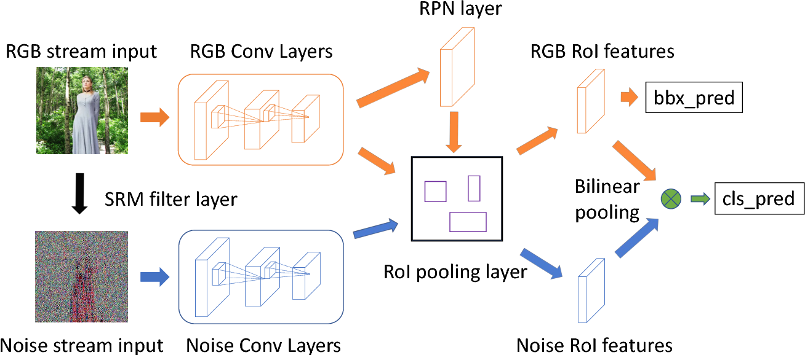
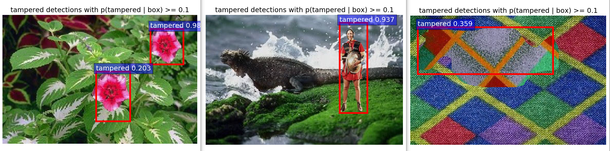

RGB-N¶
Image_manipulation_detection¶
Paper: CVPR2018, Learning Rich Features for Image Manipulation Detection
Code based on Faster-RCNN
This is a rough implementation of the paper. Since I do not have a titan gpu, I made some modifications on the algorithm, but you can easily change them back if you want the exact setting from the paper.

Environment¶
Python 3.6 TensorFlow 1.8.0
Setup¶
Download vgg16 pre-trained weights from here
save to /data/imagenet_weights/vgg16.ckpt
Two-stream neural network model: [lib/nets/vgg16.py]
noise stream’s weights are randomly initialized
for accurate prediction, please pre-train noise stream’s vgg weights on
ImageNetand overwrite the trainable setting of noise stream afterSRMconv layer
Bounding boxes are predicted by both streams.
In the paper,
RGB streamalone predicts bbox more accurately, so you may wanna change that as well (also defined in vgg16.py)
Use
main_create_training_set.pyto create training set fromPASCAL VOCdataset.The generated dataset will follow the
pascal vocstyle, which is also required bytrain.py
Tensorboardfile will be save at/defaultWeights will be save to
/default/DIY_detaset/default
Note¶
The code requires a large memory GPU. If you do not have a 6G+ GPU, please reduce the number of noise stream conv layers for training.
Demo results¶
Dataset size: 10000, epoch: 3 
Finally¶
I will update this repo a few weeks later after I installed the new GPU